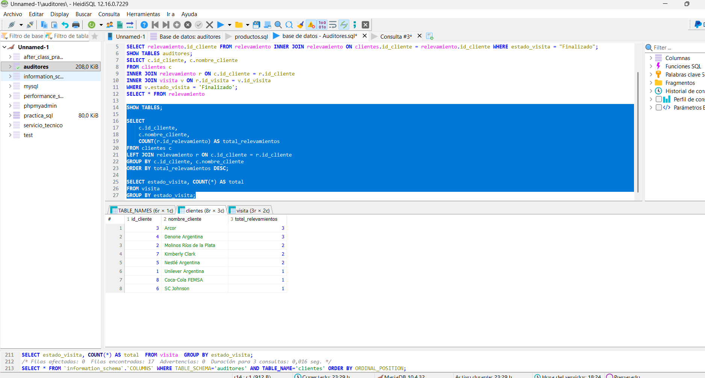
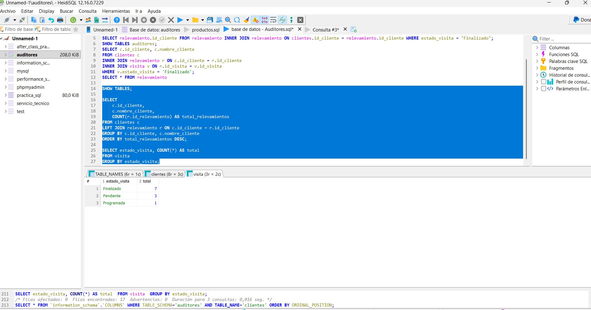

Objetivo
El objetivo de este trabajo práctico es diseñar e implementar una base de datos relacional que gestione la información de auditores, visitas a puntos de venta, relevamientos y clientes. Se busca aplicar conceptos de normalización, integridad referencial y consultas SQL avanzadas.
- Diseñar un modelo de datos normalizado con 6 tablas relacionadas
- Implementar relaciones de uno a muchos entre entidades
- Crear consultas SQL complejas con JOINs y agregaciones
- Generar indicadores KPI para análisis de gestión
- Documentar la estructura y funcionalidad del sistema
Diagrama Entidad-Relación (DER)
Diccionario de Datos
| Tabla | Campo | Tipo | Descripción | Restricciones |
|---|---|---|---|---|
| AUDITOR | id_auditor | INT(3) | Identificador único del auditor | PK, AUTO_INCREMENT |
| AUDITOR | nombre_auditor | VARCHAR(25) | Nombre del auditor | NOT NULL |
| AUDITOR | apellido_auditor | VARCHAR(25) | Apellido del auditor | NOT NULL |
| AUDITOR | contacto_auditor | VARCHAR(30) | Teléfono o email del auditor | NOT NULL |
| CLIENTES | id_cliente | INT(4) | Identificador único del cliente | PK, AUTO_INCREMENT |
| CLIENTES | nombre_cliente | VARCHAR(25) | Nombre de la empresa cliente | NOT NULL |
| CLIENTES | contacto_cliente | VARCHAR(30) | Teléfono o email del cliente | NOT NULL |
| EMPRESA | idEmpresa | INT(3) | Identificador único de empresa retail | PK, AUTO_INCREMENT |
| EMPRESA | nombre_empresa | VARCHAR(25) | Nombre de la cadena retail | NOT NULL |
| PUNTO_DE_VENTA | idPunto_venta | INT(3) | Identificador único del punto de venta | PK, AUTO_INCREMENT |
| PUNTO_DE_VENTA | nombre_punto_venta | VARCHAR(25) | Nombre del local/sucursal | NOT NULL |
| PUNTO_DE_VENTA | direccion_punto_venta | VARCHAR(50) | Dirección del punto de venta | NOT NULL |
| PUNTO_DE_VENTA | idEmpresa | INT(3) | Referencia a empresa matriz | FK → EMPRESA, CASCADE |
| VISITA | id_visita | INT(4) | Identificador único de visita | PK, AUTO_INCREMENT |
| VISITA | id_auditor | INT(3) | Auditor responsable de la visita | FK → AUDITOR, CASCADE |
| VISITA | idPunto_venta | INT(3) | Punto de venta auditado | FK → PUNTO_DE_VENTA, CASCADE |
| VISITA | fecha_visita | DATE | Fecha de la visita | NOT NULL |
| VISITA | hs_inicio_visita | TIME | Hora de inicio de la visita | NOT NULL |
| VISITA | hs_fin_visita | TIME | Hora de finalización | NOT NULL |
| VISITA | cant_servicios | INT(1) | Cantidad de relevamientos realizados | NOT NULL |
| VISITA | estado_visita | VARCHAR(25) | Estado (Finalizado/Pendiente/Programada) | NOT NULL |
| RELEVAMIENTO | id_relevamiento | INT(10) | Identificador único del relevamiento | PK, AUTO_INCREMENT |
| RELEVAMIENTO | id_cliente | INT(4) | Cliente para el cual se realiza | FK → CLIENTES, CASCADE |
| RELEVAMIENTO | id_visita | INT(4) | Visita a la cual pertenece | FK → VISITA, CASCADE |
| RELEVAMIENTO | descripcion_relevamiento | VARCHAR(200) | Detalle del relevamiento realizado | NOT NULL |
💾 Script SQL de la Base de Datos
El proyecto incluye el script completo de creación de tablas, relaciones e inserción de datos de prueba.
📥 Descargar Base de DatosConsultas SQL Principales
1. Listar todos los auditores
SELECT
id_auditor,
nombre_auditor,
apellido_auditor,
contacto_auditor
FROM auditor
ORDER BY apellido_auditor;
2. Visitas realizadas con información de auditor y punto de venta
SELECT
v.id_visita,
a.nombre_auditor,
a.apellido_auditor,
pv.nombre_punto_venta,
e.nombre_empresa,
v.fecha_visita,
v.estado_visita
FROM visita v
JOIN auditor a ON v.id_auditor = a.id_auditor
JOIN punto_de_venta pv ON v.idPunto_venta = pv.idPunto_venta
JOIN empresa e ON pv.idEmpresa = e.idEmpresa
ORDER BY v.fecha_visita DESC;
3. Relevamientos por cliente
SELECT
c.id_cliente,
c.nombre_cliente,
r.id_relevamiento,
r.descripcion_relevamiento,
v.fecha_visita
FROM clientes c
LEFT JOIN relevamiento r ON c.id_cliente = r.id_cliente
LEFT JOIN visita v ON r.id_visita = v.id_visita
ORDER BY c.nombre_cliente, v.fecha_visita;
4. Cantidad de visitas por auditor
SELECT
a.id_auditor,
a.nombre_auditor,
a.apellido_auditor,
COUNT(v.id_visita) AS total_visitas
FROM auditor a
LEFT JOIN visita v ON a.id_auditor = v.id_auditor
GROUP BY a.id_auditor, a.nombre_auditor, a.apellido_auditor
ORDER BY total_visitas DESC;
5. Estado de las visitas (Finalizado, Pendiente, Programada)
SELECT
estado_visita,
COUNT(*) AS cantidad
FROM visita
GROUP BY estado_visita
ORDER BY cantidad DESC;
6. Puntos de venta por empresa
SELECT
e.nombre_empresa,
pv.nombre_punto_venta,
pv.direccion_punto_venta
FROM empresa e
LEFT JOIN punto_de_venta pv ON e.idEmpresa = pv.idEmpresa
ORDER BY e.nombre_empresa, pv.nombre_punto_venta;
7. Total de relevamientos por cliente
SELECT
c.id_cliente,
c.nombre_cliente,
COUNT(r.id_relevamiento) AS total_relevamientos
FROM clientes c
LEFT JOIN relevamiento r ON c.id_cliente = r.id_cliente
GROUP BY c.id_cliente, c.nombre_cliente
ORDER BY total_relevamientos DESC;
Indicadores KPI
Total de Auditores Activos
SELECT COUNT(*) AS total FROM auditor;
Cantidad de auditores en el sistema
6 auditores
Visitas Realizadas
SELECT COUNT(*) AS total FROM visita WHERE estado_visita = 'Finalizado';
Total de auditorías completadas
7 visitas finalizadas
Servicios/Relevamientos Total
SELECT COUNT(*) AS total FROM relevamiento;
Total de relevamientos realizados
15 relevamientos
Promedio de Servicios por Visita
SELECT AVG(cant_servicios) AS promedio FROM visita;
Servicios promedio por auditoría
1.45 servicios
Total de Clientes
SELECT COUNT(*) AS total FROM clientes;
Cantidad de clientes auditados
8 clientes
Total de Puntos de Venta
SELECT COUNT(*) AS total FROM punto_de_venta;
Cantidad de locales auditados
8 puntos de venta
Cadenas Retail
SELECT COUNT(*) AS total FROM empresa;
Cantidad de cadenas retail
5 empresas
Visitas por Estado
SELECT estado_visita, COUNT(*) AS total FROM visita GROUP BY estado_visita;
Distribución de estados de visitas
Ver consulta
Capturas de HeidiSQL
📸 Instrucciones para agregar capturas: Toma screenshots de HeidiSQL y crea una carpeta "images" en el repositorio. Sube las imágenes y reemplaza los placeholders.
- Estructura completa de las 6 tablas (AUDITOR, CLIENTES, EMPRESA, PUNTO_DE_VENTA, VISITA, RELEVAMIENTO)
- Relaciones y claves foráneas entre tablas
- Ejecución de consultas principales con resultados
- Cálculo de indicadores KPI
- Datos de ejemplo: Auditores, Clientes, Puntos de venta, Visitas realizadas
Captura 1: Tablas y estructura
Reemplaza con screenshot de HeidiSQL
Captura 2: Consulta JOIN
Reemplaza con resultado de consulta
Captura 3: KPI y agregados
Reemplaza con cálculos KPI
Pasos para agregar tus capturas:
- Toma screenshots en HeidiSQL (Alt+Print Scr o captura de pantalla)
- Crea una carpeta llamada
imagesen la raíz del repositorio - Sube las imágenes (captura1.png, captura2.png, etc.)
- En el HTML, reemplaza cada placeholder con:
<img src="images/captura1.png" alt="Descripción"> - Commit y push a GitHub
Capturas de Consultas SQL
Consulta JOIN

Indicadores KPI

Resultado de Consulta

Conclusiones
Aprendizajes clave del proyecto:
- Normalización en práctica: La base de datos está normalizada en 3FN (Tercera Forma Normal), evitando redundancias y garantizando integridad referencial entre 6 tablas.
- Relaciones complejas: Se implementaron relaciones uno-a-muchos (1:N) entre: AUDITOR → VISITA, EMPRESA → PUNTO_DE_VENTA, VISITA → RELEVAMIENTO, etc.
- Consultas avanzadas: Las combinaciones de JOINs (INNER, LEFT), GROUP BY, agregados (COUNT, SUM, AVG) y filtros permiten extraer información significativa.
- Análisis de datos real: Los KPI desarrollados permiten medir productividad de auditores, efectividad de auditorías y cobertura de clientes.
- Integridad referencial: El uso de FOREIGN KEY con ON DELETE CASCADE garantiza consistencia al eliminar registros relacionados.
Desafíos enfrentados:
- Diseño de la estructura relacional considerando todos los puntos de contacto entre entidades
- Definición adecuada de tipos de datos y tamaños para optimizar almacenamiento
- Creación de consultas que combinen múltiples tablas sin perder legibilidad
- Cálculo de indicadores KPI que reflejen realidades del negocio de auditoría
Integrantes del trabajo:
- 👤 Fernández Magali
- 👤 Frutos Tamara
- 👤 Ocampos Micaela
- 👤 Sipioni Florencia
Tecnologías utilizadas:
- Motor: MariaDB 10.4.32
- Cliente: HeidiSQL 12.16.0
- Lenguaje: SQL estándar con variantes MariaDB
- Documentación: HTML5 + CSS3 responsivo